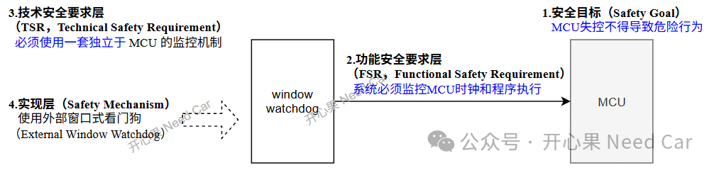

开心果 Need Car · 2026-03-10T08:06:00+08:00 · 微信原文

1.内部看门狗和外部看门狗的功能区别
检测目标 | 内部看门狗 （主时钟驱动） | 外部看门狗 （独立RC时钟） |
程序跑飞、死循环、卡死 | ✔ 能检测 | |
程序执行异常（过快/过慢） | 普通WDT不行，时间窗口WDT可以 | 普通WDT不行，时间窗口WDT可以 |
主时钟故障（停振/频偏） | ❌ 无法检测 |
2.对看门狗理解
在做系统架构、功能安全概念设计时，对系统的安全等级通常要求如下：
ASIL A / ASIL B
可使用MCU内部watchdog，视需求决定是否加外部watchdog
ASIL C / ASIL D
强烈建议（几乎默认）使用外部看门狗作为独立安全机制提升DC（diagnostic coverage），以满足硬件架构指标SPFM（Single‑Point Fault Metric）/LFM（Latent‑Fault Metric）。
所以，watchdog和系统要达到的安全目标关系应该这样理解：系统的安全要求来源自系统目标ASIL（Automotive Safety Integrity Level）。即：如果系统是ASIL D，那么看门狗必须能满足ASIL D所需的性能，比如：及时诊断程序执行顺序错误（program sequence failure）、时钟失效（clocking failure）等。高ASIL系统通常需要独立监控，很多ASIL C/D 系统会使用外部看门狗以满足SG。
ISO 26262-10（2018版）中，在系统级设计（system level design）中提到了这样一个假设：
The system will implement a windowed watchdog safety mechanism external to the MCU to detect either clocking or program sequence failures of the MCU. |
简而言之：系统层需要提供MCU外部的独立看门狗，用于监控MCU运行时序是否正常。也就是说，这个假设的成立才能够在真实系统中满足对应的ASIL要求。
往期精彩回顾